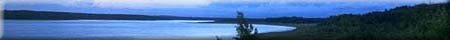
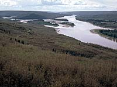

Some Common Symptoms of Forest Ecosystem Decline
|  Forest Tent Caterpillar damage
| Tree Growth-decreasing Symptoms:
|
Abnormal Tree Growth Symptoms:
- active shedding of needles and leaves while still green
- shedding of whole green shoots
- abnormal branching patterns - nests of many small branches
- greater than normal production of out-of-place shoots
- altered shape of leaves
- excessive seed and fruit production year after year
- very brittle branches
Tree Water-stress Symptoms:
- altered water balance
- diseases associated with wet wood
Biodiversity-decreasing Symptoms:
- decrease in bird and mammal species
- decrease in insect species
- decrease in soil organisms
- decrease in understory vegetation species